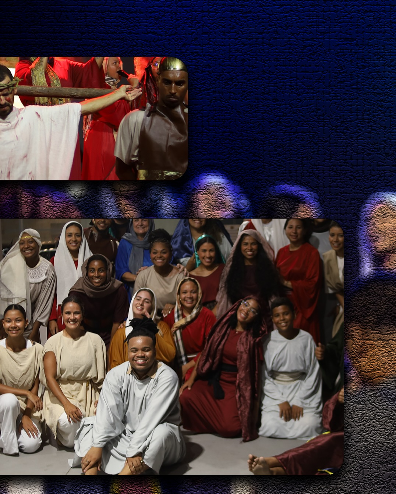
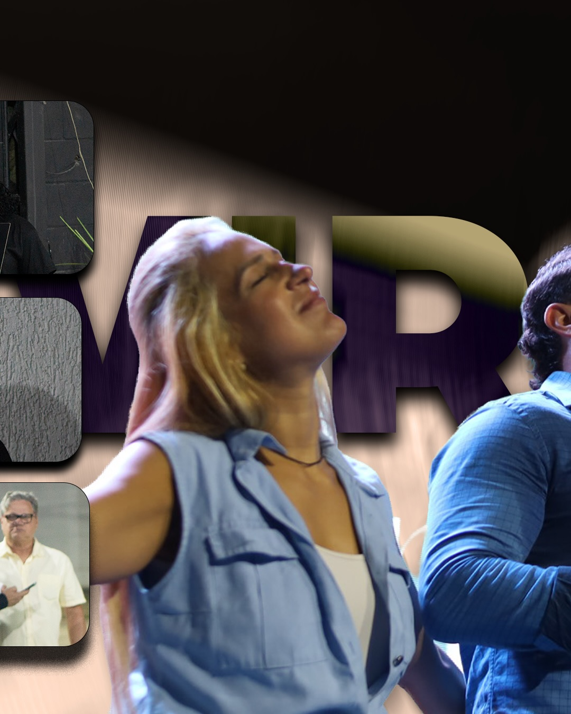

Trazendo uma experiência nova de culto, com um perfil mais jovem, contemporâneo e linguagem direta.
A MAV Church Recreio apresenta uma linguagem direta para uma geração que busca fé, comunidade e presença de Deus com autenticidade.
Worship dinâmico, mensagens acessíveis e uma cultura de conexão fazem da filial uma porta de entrada para novos começos.
Nossos cultos trazem uma banda com linguagem musical contemporânea, preparando o terreno.
Sermões teologicamente sólidos, mas muito acessíveis a quem não tem bagagem religiosa.
Um ambiente receptivo de boas-vindas com a galera engajada em se conectar de verdade com você.

Nossas reuniões são incrivelmente dinâmicas e podem mudar.